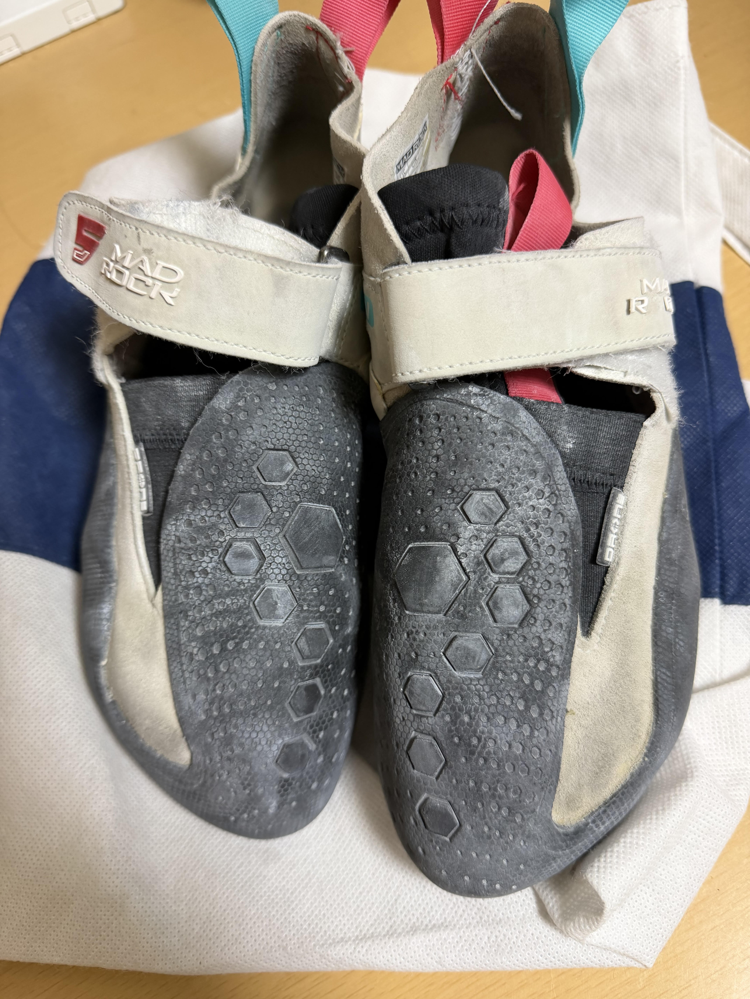

このページではボルダリングに必要な道具を紹介する。
今回紹介する道具は2つ。
ボルダリングをするにはクライミングシューズが必要だ。 ただの靴とは違い、靴の裏面とかかと、足の甲の先端部分にはラバーといわれるゴムでおおわれている。 このゴムによるフリクションが、小さいホールドを踏んだり立ったりするのに必要だ。
また、より上級者向けの靴になるとつま先が内側にカーブしているターンインであったり、つま先が下に下がっているダウントゥが靴に施されている。
これが今自分が履いているシューズです。
チョークの種類には液体とパウダーの二種類あり、それぞれのメリットデメリットがある。
| メリット | デメリット | |
|---|---|---|
| 液体 |
|
|
| パウダー |
|
|